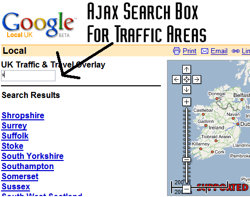

Install (FFox 1.0.x) :Right Click here and select "Install User Script"
Install (FFox 1.5 + GM 0.6.4 Only) : Right Click here and choose install user script (install over previous copies)
The aim of this script is to add a UK Traffic Data overlay to Google Maps. It may be useful to help plan journeys, although I accept no liability for the accuracy of the data, nor does the BBC.
It uses code from my own project at http://bbc.blueghost.co.uk , and calls an GM_xmlhttpRequest to a file there to get the markers xml.
To Load the Overlay click the "Load UK Traffic"at the top of the page next to the "Directions" link.
The current loading status will be displayed to the far right of the peach strip.
Click on a marker to identify the county/city. Click the "Show Delays" to zoom in and load the delays for that area.
The status indicator will tell you what is happening. It makes a request to my server for the data and this is returned and
displayed. Subsequent calls in the same session will use data cached in an array. You can load up as many areas as you want.
Images for markers are located on my ISP (blueyonder) web space as they have 'unlimited' bandwidth.
This script and my other website is Supported by backstage.bbc.co.uk
GreaseMonkey is an extension for Mozilla Firefox.
I Found Dive Into Greasemonkey very useful in learning how to make Greasemonkey scripts.

Load/Hide link and status indicator
County/City markers loaded; A County Marker clicked; The status display when loading area traffic data;

The type of data available from an alert

Any Comments then email me @ 
Install (FFox 1.0.x) :Right Click here and select "Install User Script"
Install (FFox 1.5 + GM 0.6.4 Only) : Right Click here and choose install user script (install over previous copies)
Version 0.2 - For FireFox 1.5 and Greasemonkey 0.6.4 only (may work on 1.0.x)
----------------------------
21 December 2005 PM
-----------------------------
Fix for new greasemonkey, install older version. Includes a side panel. See screenshots for more
-----------------------------
Version 0.15 - For FireFox 1.5 and Greasemonkey 0.6.3 only (may work on 1.0.x)
----------------------------
4 November 2005 PM
-----------------------------
Fix for new firefox + greasemonkey, install older version on Firefox 1.0.x
-----------------------------
Version 0.14
----------------------------
11 October 2005
-----------------------------
Update for Google Local
-----------------------------
Version 0.12
----------------------------
17th July 2005
-----------------------------
Update a few minor things and a URL
----------------------------
Version 0.11
----------------------------
16th July 2005
-----------------------------
Added missing function zoomOut()
----------------------------
Version 0.1
----------------------------
16th July 2005
-----------------------------
Initial release